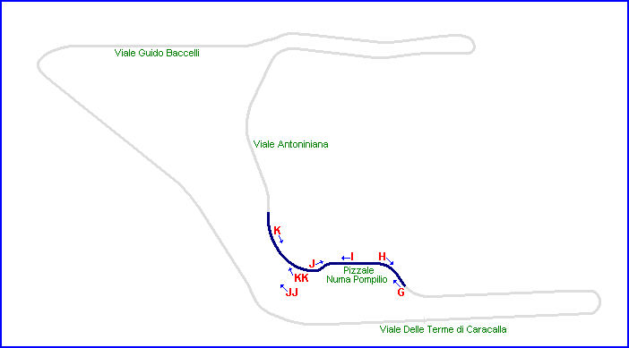
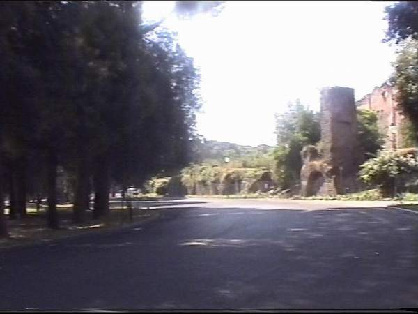
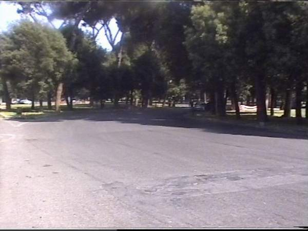
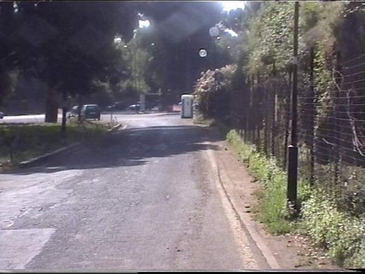
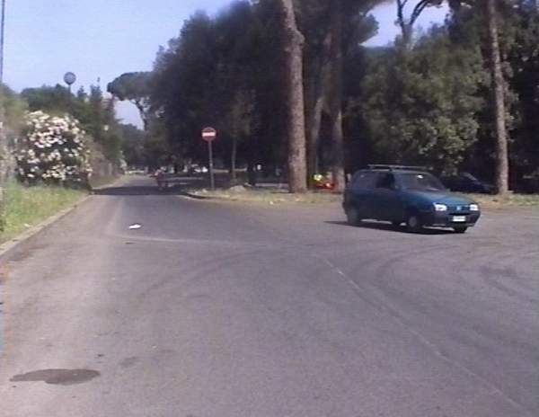
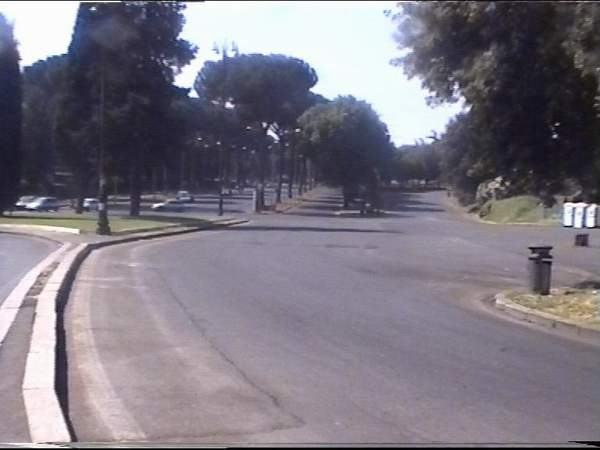
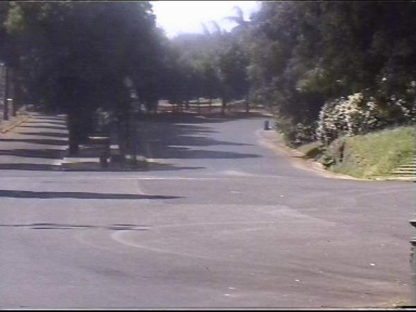
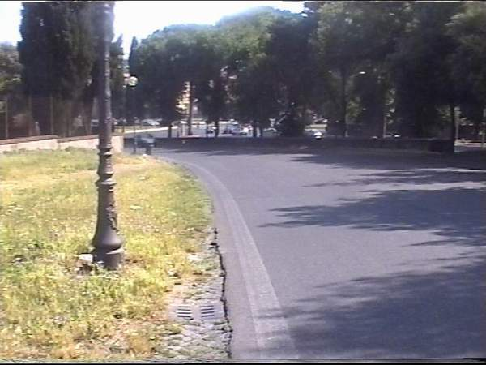

Terme di Caracalla - Page 2 of 5
|| Contents | Page 1 | Page 2 | Page 3 | Page 4 | Page 5 || Home ||

Letters and arrows on the map represent the direction and location of where the pictures
were taken. Click links above to view the photographs.
Return to racingcircuits.net's Photo Archive Main Index

G - The exit of turn 2 looking towards turn
3.

H - Looking back towards turn 2 from the
outside of 3. Just right of centre you can see the gap which is turn 2.

I - In this area I have a feeling that the
road may have been changed since 1949! I confess to having modified the track map to look
as it does now. The original from Darren's
site has a curve where this section is straight, but I found no evidence of it. This
image shows the approach to turn 4, which turns right just after the blue and white
cubicles which I suspect were NOT there in the late 40s!

J - looking back towards turn 3 from the
entrance to turn 4.

JJ - This is a picture that requires careful
explanation. What you are looking at is turn 4, (the road coming down on the right of
centre) - while I am standing around where the entry to turn 8 must have been. As you can
see, there is more than one section of road running up the hill to the left. Clearly this
section of road has been widened considerably as the years have passed and so it is
somewhat difficult to determine exactly which piece of road follows the old race circuit
the closest. I would like to think that maybe it is the narrow section in the centre but
probably more likely is that it was somewhere around the line of the very wide piece of
road to the far left. Although the 2 branches of the track appear to be very close
together, they do diverge further up, as you can see from the map.

KK - This picture is similar to the one
immediately above, but taken from nearer turn 4.

K - looking back towards the exit of turn 4.
This is the prettiest section of the circuit.
Photographs & Text ©Barry Boor. Reproduced here with kind permission.